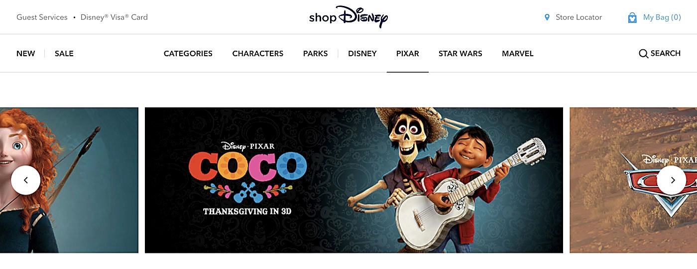
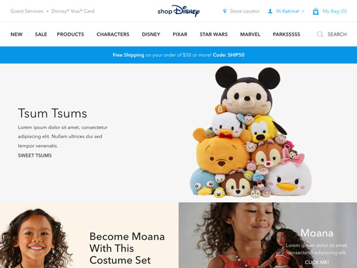
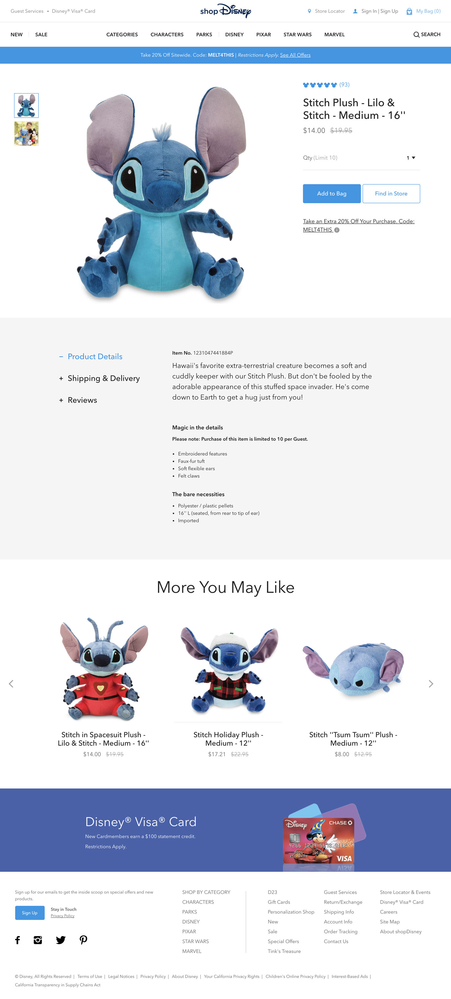
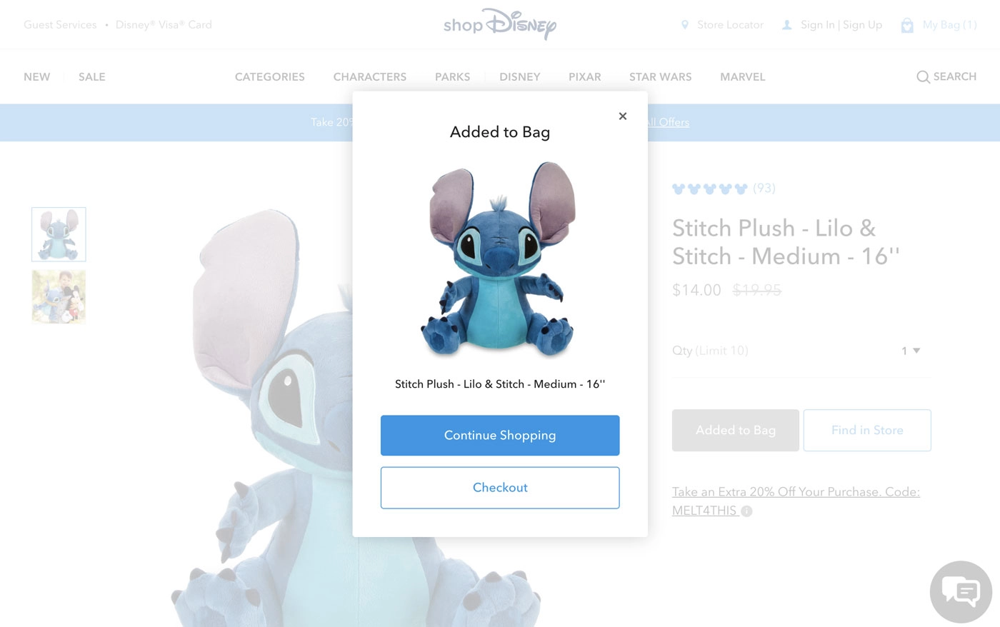
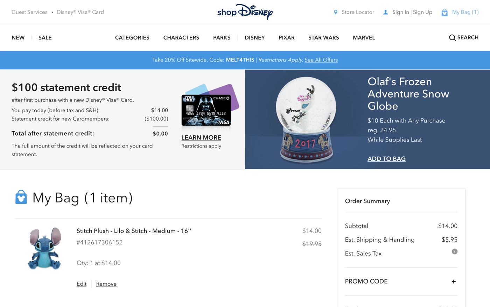

shopDisney

I was a project lead for shopDisney, Disney Interactive's first major move into e-commerce, bringing global shopping experiences onto our platform.
I helped secure the project contract by building a frontend prototype that demonstrated the platform's responsive, modular capabilities could support the proposed site redesign. For this project, we expanded the platform with React and GraphQL while building the commerce experience from the ground up. Despite a compressed timeline and significant technical complexity, we completed the project within a year and shipped ahead of the 2017 holiday shopping season.

Scaling the Team
I was the frontend project lead, managing scope, backlog, assignments, and code reviews. The project's scope was massive, but leadership wanted to maintain a hard timeline, so the development team grew to over 10 front-end developers as the project scaled. I onboarded devs new to the codebase and worked across platform teams to surface dependencies and keep the project moving. Assigning work based on individual strengths taught me to anticipate effort and timelines across different skill sets and distribute work accordingly.
Designing for Commerce
This project introduced transactions to a platform built for content, so point of purchase features like product detail, categories, and checkout experiences had to be built from scratch. The experience required expansive navigation, filtering, and search, along with product page and photography navigation and checkout patterns optimized with mobile shopping behaviors in mind. We leveraged the platform's existing customization capabilities to integrate shopping into a content-rich experience, blending existing media with new commerce modules.

Takeaways
ShopDisney was the first major project where I applied systems thinking beyond my individual contribution. I learned to translate scope into people, time, and effort, balancing individual strengths, workload, and dependencies against a fixed deadline. I was still in the trenches with the team, leading largely by example, but the experience gave me an early understanding of the practical mechanics of leadership: knowing what the team could take on, where we needed more capacity, and how to load balance and optimize per team member to keep everyone moving toward the same goal.

